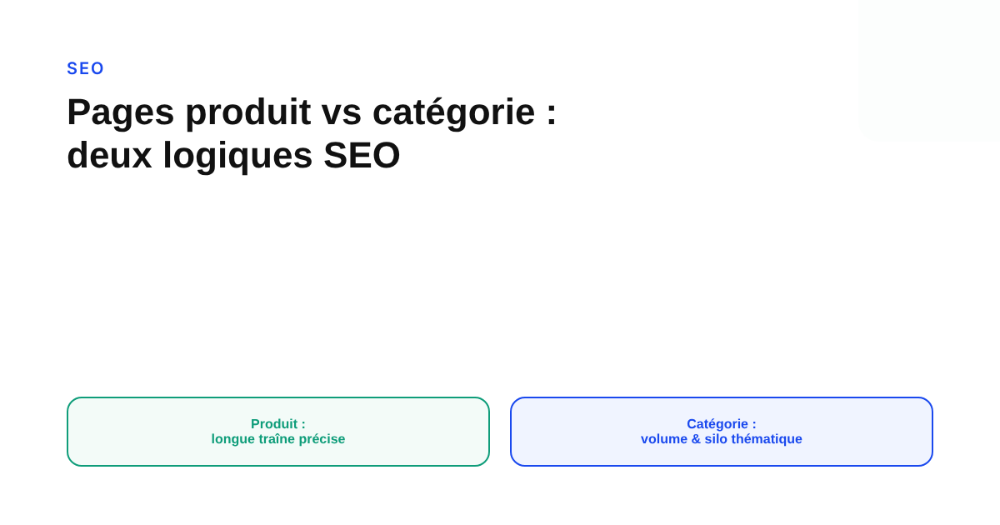
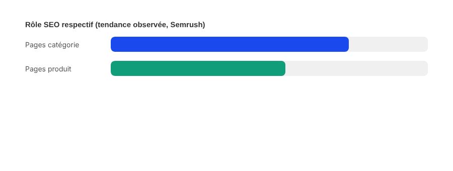

Pages produit vs pages catégorie en e-commerce : comment les optimiser différemment
La plupart des sites e-commerce mettent tout leur soin éditorial sur leurs fiches produit, alors que ce sont souvent leurs pages catégorie qui portent l'essentiel du trafic organique. Les deux ne répondent pas à la même intention de recherche, et ne se traitent pas de la même façon.

Un réflexe courant en e-commerce consiste à concentrer tout l'effort SEO sur les fiches produit : elles seules, après tout, portent le call-to-action d'achat. Le problème, c'est que les requêtes qui amènent du trafic organique sont rarement des requêtes de ce niveau de précision. « Meilleur couteau de cuisine japonais » ou « chaussures de running trail femme » sont des requêtes de catégorie, pas des requêtes de produit : elles exigent une page qui compare une offre, pas une fiche qui en décrit une seule.
Deux intentions de recherche différentes
Une page produit cible des requêtes transactionnelles précises : un nom de modèle, une référence, une marque associée à un type de produit identifié. Une page catégorie cible des requêtes de recherche ou de comparaison, plus larges, formulées en amont de la décision finale. Confondre les deux conduit à deux erreurs symétriques : une page produit trop générale qui ne convertit sur rien de précis, ou une page catégorie trop pauvre, réduite à une simple grille de produits sans aucun texte qui situe l'offre pour Google comme pour le visiteur.
Ce qu'une analyse à grande échelle suggère
Une analyse Semrush portant sur environ 10 000 domaines e-commerce, réalisée en 2025 et citée par plusieurs agences SEO depuis, avance que les pages catégorie y généraient en moyenne nettement plus de trafic organique par page que les pages produit, pour un investissement éditorial généralement inférieur. Cette donnée provient d'une source secondaire — nous n'avons pas eu accès au rapport Semrush original — et le ratio exact varie selon les relais qui la citent : à prendre comme une tendance plausible et largement reprise, pas comme un chiffre à citer au point près sans vérification sur votre propre secteur.

Ce qui fait une bonne page catégorie
Une page catégorie qui fonctionne bien pour le SEO associe une courte introduction éditoriale (quelques phrases qui situent l'offre et répondent à l'intention de comparaison), une architecture de filtres cohérente qui ne génère pas d'URL dupliquées indexables, et un maillage clair vers les produits phares de la catégorie. L'erreur la plus fréquente est l'absence totale de texte : une grille de produits seule donne à Google très peu de matière pour comprendre le sujet exact de la page, au-delà des titres de produits eux-mêmes.
Ce qui fait une bonne page produit
À l'inverse, une page produit n'a pas besoin d'un texte long : elle doit répondre précisément à une intention d'achat déjà presque arrêtée. Une description unique — pas copiée du fabricant, ce qui crée du contenu dupliqué entre tous les sites qui vendent le même article —, des données structurées de type Product (prix, disponibilité, avis) et des visuels de qualité comptent davantage que la longueur. L'objectif n'est pas de faire concurrence à la page catégorie sur une requête large, mais de convertir sur une requête déjà précise.
Le cas des produits discontinués
Quand un produit n'est plus commercialisé et ne sera pas remplacé à l'identique, supprimer la page sans redirection fait perdre tout le capital de liens et d'historique accumulé. La pratique recommandée est une redirection 301 vers la page catégorie la plus pertinente, plutôt que vers la page d'accueil : elle conserve une partie du signal et oriente l'utilisateur vers une alternative cohérente avec son intention initiale, au lieu de le laisser face à une page générique sans rapport avec sa recherche.
FAQ
Les pages catégorie génèrent-elles vraiment plus de trafic que les pages produit ?
C'est ce que suggère une analyse Semrush portant sur environ 10 000 domaines e-commerce, citée par plusieurs agences en 2025 : les pages catégorie y attiraient en moyenne davantage de trafic organique par page que les pages produit, pour un investissement éditorial généralement plus faible. Cette donnée provient d'une source secondaire et mérite d'être vérifiée sur son propre site plutôt que généralisée sans nuance.
Faut-il ajouter du contenu éditorial sur une page catégorie ?
Généralement oui, surtout pour les requêtes de comparaison large (« meilleur couteau de cuisine », par exemple) où une page catégorie peut répondre avec une courte introduction qui situe l'offre, avant la liste de produits. Une page produit, elle, cible une intention plus précise et n'a pas besoin du même développement.
Que faire d'une page produit quand l'article est en rupture définitive ?
Une redirection 301 vers la page catégorie la plus pertinente, plutôt que vers la page d'accueil, préserve une partie du capital de liens accumulé et oriente l'utilisateur vers une alternative cohérente avec son intention d'origine.
Envie d'un audit SEO qui distingue vraiment pages produit et pages catégorie ?
Pour aller plus loin, voir la page SEO, et l'article Structurer un site qui se positionne avec les cocons sémantiques.
Pour continuer sur ce sujet.